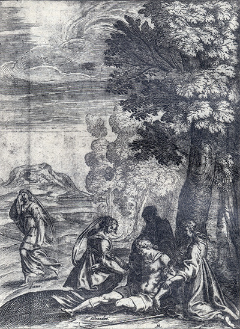
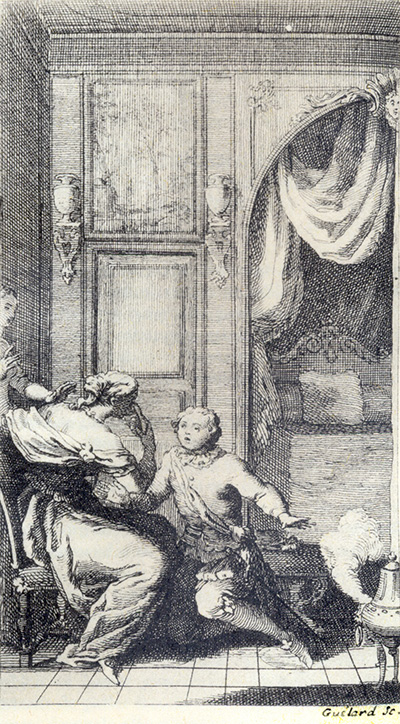
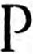

L'Astrée d'Honoré d'Urfé
Quatrième partie
Livre 2

Gravure signée M(ichel Lasne).
Diane s'éloigne tandis que Phillis et Astrée secourent Silvandre évanoui.
Alexis est dans l'ombre.
Diane « faisait semblant de ne guère se soucier de cet accident.
Au contraire, Alexis, Astrée et Phillis pleines de compassion, étaient toutes empêchées autour de lui » (IV, 2, 161).
L'Astrée. Édition Vaganay**, 1925, IV, 2.Gravure signée M(ichel Lasne).
Diane s'éloigne tandis que Phillis et Astrée secourent Silvandre évanoui.
Alexis est dans l'ombre.
Diane « faisait semblant de ne guère se soucier de cet accident.
Au contraire, Alexis, Astrée et Phillis pleines de compassion, étaient toutes empêchées autour de lui » (IV, 2, 161).
(Voir Illustrations)

Dorinde et une servante sont surprises par Mérindor.
« Il entra si promptement où nous étions qu'il fut plutôt à genoux devant moi que je n'y eus pris garde.
De fortune j'avais le masque sur le visage, mais je ne me pouvais cacher les yeux sinon avec les mains » (IV, 2, 286).
L'Astrée. Édition Vaganay**, 1925, IV, 4.Dorinde et une servante sont surprises par Mérindor.
« Il entra si promptement où nous étions qu'il fut plutôt à genoux devant moi que je n'y eus pris garde.
De fortune j'avais le masque sur le visage, mais je ne me pouvais cacher les yeux sinon avec les mains » (IV, 2, 286).
(Voir Illustrations)
STANCES.
POUR SON MAL, LES
pleurs sont trop peu de chose.
POurquoi pleurer ce désastre ennuyeux
Si tous les pleurs qu'ensemble tous les yeux
Pourraient jeter ne peuvent y suffire ?
Ceux qui sauront quelles sont nos douleurs,
S'étonneront que pour un tel martyre
Nous recourions à l'aide de nos pleurs.
S'il est permis quelquefois de pleurer,
C'est quand on peut la douleur mesurer,
Ou que les pleurs égalent notre peine.
Mais quand le mal parvient jusqu'à ce point
Qu'il est plus grand que toute plainte humaine,
À quoi les pleurs qui ne soulagent point ?
Que désormais nous les chassions de nous,
De ce malheur, trop mortels sont les coups,
Pour se guérir d'un si faible remède.
Mais en leur place appelons le trépas,
Puisqu'en effet le mal qui nous possède
Ne peut guérir sinon en n'étant pas.
j'aime mieux faillir en vous obéissant, que de ne pas satisfaire à votre volonté. Et alors, après s'être tue quelque temps, elle reprit la parole de cette sorte :
prier les Dieux qu'ils vous fassent épouser Périandre, ou si vous les remerciez de ce qu'ils l'ont déjà fait ? - Ni l'un, ni l'autre, lui répondis-je en souriant, ne sera jamais cause de me les faire beaucoup importuner ! - Que vous êtes dissimulée, me dit-il, de parler de cette sorte ! - Mais que vous êtes incrédule, répliquai-je, si vous ne me croyez pas ! - Et pourquoi, reprit-il, me niez-vous une chose qui n'est plus cachée à personne ? - Pourquoi, lui répondis-je, en tournant la tête de l'autre côté, me la demandez-vous si vous la savez, et si vous ne me voulez pas croire ? - Je sais, me dit-il, ce que tous savent, mais je vous demande ce que vous seule me pouvez dire. Dites-moi donc de quelle façon vous recevez ce mari ? - Comme une fille, lui dis-je, reçoit
Aime, ose et continue
η.
STANCES.
Un amant inconstant.
I.

CE jeune amant, Ô Dieu
η, pourra-t-il bien
Rompre le nœud qu'il disait Gordien
Pour se rendre infidèle ?
S'il peut le faire, Amour, jamais son cœur
Digne ne fut d'une flamme si belle,
Ni d'un si beau vainqueur.
II.
Pourra-t-il bien le quitter, ce bel œil,
Sans que mourant incontinent de deuil
Il en paye l'amende
η ?
Ah ! pour certain, s'il en a le pouvoir,
Jamais ses yeux une beauté si grande
N'ont mérité de voir.
III.
Pourra-t-il bien, après l'avoir aimée
η,
S'en éloigner sans en être blâmé
Comme un perfide insigne ?
Amour, dis-moi, s'il en éteint les feux,
Ce cœur changeant, n'était-il il pas indigne
D'être brûlé par eux ?
IV.
Dès le moment qu'un cœur en
η est atteint
Jamais depuis le feu ne s'en
η éteint,Il va brûlant
η sans cesse.Combien en
η sont incurables les coups,Vous le savez, quand ce bel œil vous blesse,
Ô grands Dieux, comme nous.
V.
Que plût au ciel que cet extrême bien
Fût destiné quelquefois d'être mien,
Par quelque Astre propice !
Ah ! je voudrais jusqu'à l'éternité
Faire égaler l'amour et le service
De ma fidélité.
STANCES.
Pourquoi elle le traite si mal.
I.

QU'ai-je commis, dites, la belle η,Qui me rende tant odieuxQue vous ne tournez plus, cruelle,Sur moi, les rais de vos beaux yeux η ?
II.
Si vous voulez de quelque outrageVous venger avec mes douleurs,Jetez vos yeux sur mon visage,Et vous n'y verrez que des pleurs.
III.
Ai-je bien commis quelque offense
Qui soit digne de ce dépit ?
Ah ! pour certain je ne le pense,
Ou j'aurais bien perdu l'esprit,
IV.
Hélas ! comment pourrait-il être,
Dorinde, que je l'eusse fait ?
Mon penser serait bien un traître
S'il avait commis ce forfait.
V.
Je n'eus jamais autre pensée
Que d'adorer votre beauté ;
Que si je l'avais offensée
J'aurais failli sans volonté.
VI.
Ne croyez qu'il se soit pu faireQue mon vouloir y soit penché,Le péché qui n'est volontaireNe se doit pas dire péché
η
.
VII.
Tournez donc dessus moi, Madame,
Vos yeux, mais faites qu'ils soient tels
Que quand ils firent dans mon âme
Des coups si profonds et mortels.
VIII.
Nous voyons les guerriers se plaire
Aux coups, témoins de leur valeur,
Pourquoi n'en veulent autant faire
Vos yeux
η pour en moi les leurs
η ?
IX.
Je sais bien qu'ainsi je demande
D'être blessé de nouveaux coups ;
Mais cette peine m'est moins grande
Que de supporter leur courroux.
la main dans sa panetière elle en tira un papier où elle lut telles paroles :
PLût à Dieu, belle Dorinde, que je ne fusse plus au monde, ou bien que je ne fusse point fils de celle qui est ma mère
η,
ou pour le moins que je fusse mon frère même, afin que, comme votre très humble serviteur, je pusse obtenir le bonheur que je lui désire, puisqu'il ne me peut être permis étant celui que je suis. L'offre que tant à regret je vous fais de lui témoignera bien à chacun que véritablement les mariages sont ordonnés dans le Ciel.
PLût à Dieu, infidèle Mérindor, que vous ne fussiez point en terre, ou que je n'eusse jamais eu des yeux pour vous voir, ou pour le moins que je fusse homme pour quelque temps, et non pas une fille, afin que, comme votre mortel ennemi, je puisse tirer de votre perfidie la vengeance que je puis bien désirer, mais qui ne m'est permis étant telle que je suis ! L'offre que vous me faites de votre frère, et que je refuse, témoignera à chacun que le mariage de lui et de moi n'a point été fait dans le Ciel. Pour le moins, je vous assure qu'il ne s'accomplira jamais en terre.
Fin du second Livre.

Livre 1

Livre 3
Référence électronique :
document.write('"'+document.title.substr(0, document.title.indexOf("-")-1)+'". '+"Dernière mise à jour : "+ExtractDate(document.lastModified)+".")Deux visages de L'Astrée.
©2005-2020 E. Henein.
URL :
var today = new Date();
document.write(document.URL +
"<br>Consulté le : " + today.toLocaleDateString("fr-FR") + ".");
var _gaq = _gaq || [];
_gaq.push(['_setAccount', 'UA-19288475-1']);
_gaq.push(['_trackPageview']);
(function() {
var ga = document.createElement('script'); ga.type = 'text/javascript'; ga.async = true;
ga.src = ('https:' == document.location.protocol ? 'https://ssl' : 'http://www') + '.google-analytics.com/ga.js';
var s = document.getElementsByTagName('script')[0]; s.parentNode.insertBefore(ga, s);
})();
Deux visages de L'Astrée.
©2005-2019 Eglal Henein. Creative Commons 4 
Édition critique de la première partie de L'Astrée (1607, 1621)
mise en ligne le 9 avril 2007
Édition critique de la deuxième partie de L'Astrée (1610, 1621)
mise en ligne le 10 octobre 2010
Édition critique de la troisième partie de L'Astrée (1619, 1621)
mise en ligne le 1er novembre 2014
Édition critique de la quatrième partie de L'Astrée (1624)
mise en ligne le 15 janvier 2019
document.write("Dernière mise à jour : "+ExtractDate(document.lastModified))